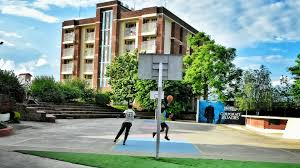
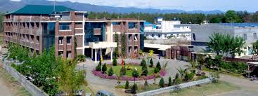

ABOUT
Welcome to doon bussiness school .one of the premier management institutes in Northern India, Doon Business School brings you an educational experience par excellence. Our primary objective is to impart education that not just creates erudite employees or managers, but creates leaders who are going to leave a lasting imprint on the business as well as social sector
What makes Doon Business School unique?
We offer our students a blend of managerial as well as technology skills so that they can combine the knowledge they have gained at our business school and leverage contemporaneous technologies to gain a formidable competitive edge. Enterprise level technology tools are the backbones of medium-size and larger businesses and hence they are an integral part of our overall curriculum.We are constantly upgrading our course material to meet the rapidly changing global business landscape so that when our students go out and work in the real environments they are already equipped with the required intellectual and technological skills needed for the job. All our students have a deep understanding of the dynamics of national as well as international economics.
Doon Business School is equipped with state-of-the-art educational and training facilities supervised and coordinated by highly trained coordinators. Many of our faculty members have had international business and teaching experience working in prestigious institutions such as Harvard business School, IIM, FMS, XLRI MIT Sloan, and many more. Our teaching faculty uses highly evolved methods to communicate with their students including role-plays, simulation exercises, case studies analysis and real-life project management and reporting. The basic idea of the entire endeavour is to impart knowledge and share experience that can help our students evolve into leaders in their respective fields. Whether they work for an organisation or decide to become entrepreneurs, the education our students get at Doon Business School will always stand them in good stead. Located in the verdant and beautiful Dehradun (the capital of Uttarakhand), near the industrial area of Selaqui to be precise, Doon business school provides an ideal environment for pursuing scholarly goals and achieving excellence in the foothills of the ancient Himalayas. Being at an idyllic location we attract students from different parts of the country. DBS is one of the best multicultural environments to study in.
Enriching experience for students
Everything you need to obtain a world-class education is available at Doon Business School. We have cutting-edge computer facilities loaded with the most updated versions of software applications that are used in the realms of education and business. Our faculty uses audiovisual and interactive learning aids to make the learning experience as effective as possible. For reference and research we have a massive library and if you prefer digital media you can also browse through the library material via our e-library. Please visit the appropriate section on this website to know more about all the various facilities available to our students.
ADVANTAGES
=>Dehradun offers a fantastic living experience=>It is a vibrant cosmopolitan with buzzing student life.
=> Weekend getaways include trekking in the Himalaya’s and adventure sports.
=>International exposures through tours Singapore/Dubai/Hongkong/Indonesia.
=>The presence of a large no. of non-polluting industries make experiential learning possible.
=>22+ Activities Club
=>Outcome Based Learning methodology along with Case Study Approach.
=>Experienced faculty from IIMs, FMS, XLRI etc. and many visiting international faculties.
=>International Certifications in addition to regular full time Degrees.
=>SAP- Germany Certification though University Alliance Partnership.
=>Six Sigma, NSE Certification, Alliance Francis-Elementary French.
=>Multiple Internships in PG and UG.
=> 100% placements since inception, international internships and placements.
=>Focussed on creating world class leaders.